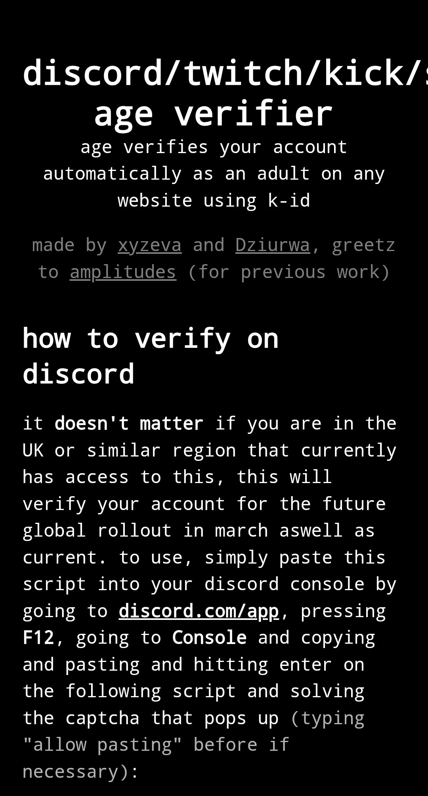

Projets
🚨🔴 Il est possible de vérifier son âge sans pièce d'identité !
J'ai testé et ça fonctionne 😬
*NOTA: Faut être un peu bidouilleur mais ça fonctionne !
Deux développeurs ont montré qu’il est possible de faire passer un compte comme “adulte” sans aucun selfie ni pièce d’identité, en modifiant simplement quelques éléments dans la page de vérification, puis en faisant valider automatiquement le lien de contrôle par un site externe, le tout en quelques secondes.
Après les déclarations fracassantes de la plateforme Discord sur la vérification d'âge à l'échelle mondiale, 2 personnes ont publié des travaux hyper intéressants permettant la manipulation du processus de vérification de l'âge et surtout en s'affranchissant de toutes contraintes liées à quelque mécanisme de pièce d'identité...
C'est à lire ! *j'ai appris des choses !
Ce nouveau contournement montre la fragilité des solutions de vérification d'âge et surtout leur limite à date !
Nos politiques et députés en France devraient en prendre de la graine quant au projet sur l'interdiction des réseaux sociaux aux moins de 15ans !
